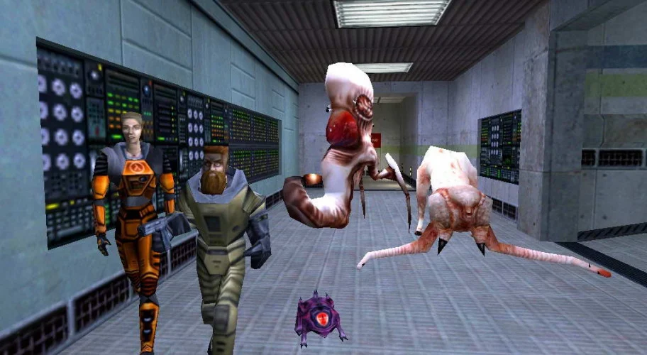
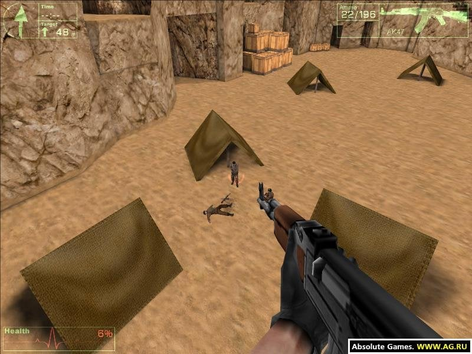

Навигация сайта:
Даже спустя 20 лет она пользуется огромной популярностью, как у геймеров, так и у киберспортсменов со всего мира, а ее создатели Мин Ли и Джесс Клифф попали в сотню лучших разработчиков игр всех времен.
Многие игроки знают, что изначально “контра” была модом для другой, не менее популярной игры Half-Life.
Первая бета-версия этого мода появилась еще в 1999 году, но корни Counter-Strike уходят куда глубже… Уходят они прямиком в 1996 год, когда ни о Half-Life, ни уж тем более о Counter-Strike и речи никакой не было.
Началось все в далеком 1996 году. Джон Кармак и Майкл Абраш разработали движок Quake Engine, как не сложно догадаться, движок был разработан для самой первой Quake, и это был первый движок, который мог обрабатывать трехмерную графику в реальном времени.
Quake Engine стал настолько прорывной технологией, что на его модификациях было выпущено огромное количество как игр, так и движков других компаний. Это связанно с тем, что id Software, которой и принадлежала разработка, были большими любителями открывать коды своих движков для всех разработчиков.

После выхода Quake, id Software решает доработать свой движок для игры Quake World. И тут в игру вступает VALVE, которая лицензирует доработанный Quake Engine и меняет его до неузнаваемости разрабатывая собственный: Gold Source.
И 19 ноября 1998 года на этом движке выходит первая Half-Life. Кстати, знаете кто посоветовал Гейбу Ньюеллу использовать именно этот движок для своей игры? Майкл Абраш, да, да, тот самый который и принимал непосредственное участие в его разработке.После выхода первой Half-life, VALVE решила открыть доступ к SDK всем желающим, для создания модов к своей новой игре. И как можно догадаться, одним из модов и станет Counter-Strike. Но случиться это только в 1999 году. В то время как “праотец” игры появился еще в 1997.
Условия жизни в данных обстоятельствах – лучше всего подходят человеку. У каждого народа на земле есть легенды связанные с космосом и происхождением людей.
В 1996 году, Мин Ли будучи студентом начинает разрабатывать свой первый мод для игры Quake на основе все того же движка Quake Engine. Спустя год работы на свет появляется мод под названием Navy SEALs, который очень отдаленно напоминает первые версии Counter-Strike.
Именно в этом моде зарождается идея создать игру про террористов и хороших парней, которые будут им противостоять. После этого Ли начинает работать над еще одной модификацией: Action Quake 2, где знакомиться с Джессом Клиффом. Action Quake 2, если следовать нашей терминологии, можно назвать уже “отцом” Counter-Strike.
